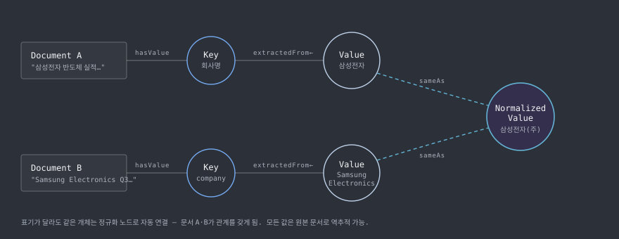
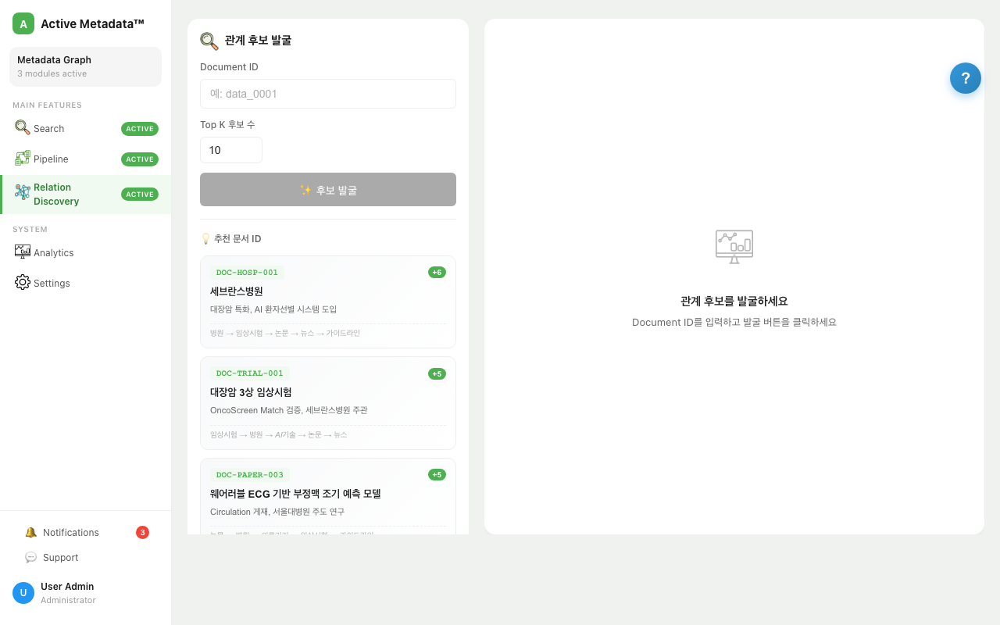

1특허 출원 — 제1발명자
0수작업 관계 매핑
2관계 유형 병행 — 규칙 + 의미
100%원본 문서 역추적 가능
S배경 — 연결되지 않는 데이터
서로 다른 카테고리로 쌓인 데이터 사이의 잠재적 연관성은 사람이 규칙을 정의해야만 발견할 수 있었고, 신규 데이터가 들어올 때마다 수작업 매핑이 반복됐습니다. 텍스트 본문에 담긴 의미 정보는 검색에 활용되지 못하고 단순 저장만 되는 상태였습니다.
T역할 — 기획부터 구현까지 전담
A설계와 구현
01LLM 메타데이터 추출 + 관계 자동 생성
비정형 텍스트 → LLM 메타데이터 추출 → 임베딩 → 유사도 기반 관계 생성 → 그래프 저장
- 본문의 의미 정보를 LLM으로 추출해 액티브 메타데이터로 생성 — 저장만 되던 본문이 검색·연결에 쓰이는 자산이 됨
- 규칙 기반 관계와 임베딩 유사도 기반 의미 관계를 병행 생성 — 신규 데이터가 추가되면 기존 데이터와의 관계가 자동 확장
- LangGraph Agent 워크플로우로 추출 → 검증 → 저장 단계를 오케스트레이션
02도메인 독립적 그래프 모델

- 도메인 전용 스키마 없이 모든 데이터를 Key-Value 노드로 표현 — 어떤 데이터셋이든 같은 구조로 수용, 온보딩 비용 최소화
- 표기가 다른 동일 개체를 정규화 노드로 묶어 자동 연결, 정규화 과정 자체도 명시적 관계로 기록해 모든 값을 원본 문서로 역추적 가능
03그래프 × 전문 검색 결합
- 그래프 탐색(관계)과 OpenSearch 전문·벡터 검색(내용)을 결합한 하이브리드 조회 — 질의 유형에 따라 분기하고 결과를 재조합
- MCP 연동으로 자연어 질의에서 Neo4j Cypher 쿼리를 자동 생성해 그래프를 대화형으로 탐색

R결과
- 특허 출원 — 「액티브 메타데이터와 그래프 데이터베이스를 활용한 신규 데이터의 잠재적 연관성 자동 탐색 및 관계 확장을 위한 장치」 (10-2026-0068848, 제1발명자)
- 공개 SW로 구현체 공개 — 데이터 카탈로그의 연관 데이터 추천·탐색 자동화 기반 확보
W기술 선정 이유
Neo4j관계 표현과 벡터 검색을 하나의 DB에서 — 그래프 탐색과 의미 검색을 오가는 질의에 유리
LangGraph추출→검증→저장의 상태 있는 Agent 워크플로우 — 분기·재시도를 그래프로 명시
Sentence Transformers한국어 의미 임베딩 — 유사도 기반 관계 생성의 품질을 좌우
MCPLLM이 Neo4j를 도구로 직접 다루게 하는 표준 인터페이스 — Cypher 자동 생성
FastAPI + uv비동기 처리와 빠른 개발 사이클
+회고 — 다시 한다면
- 관계 생성 품질을 데모로 보여주는 데서 나아가, 정답 관계셋을 만들어 정밀도/재현율로 평가했을 것
- 임베딩 유사도 임계값을 고정하지 않고 데이터셋 특성에 따라 자동 튜닝되는 구조를 실험했을 것
* 실제 시스템 코드는 과제 특성상 비공개입니다. 데모는 UI/기능 재현입니다.